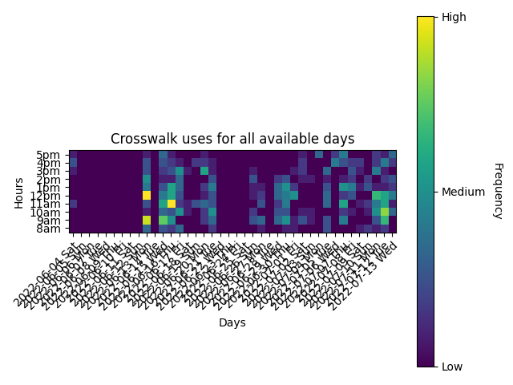
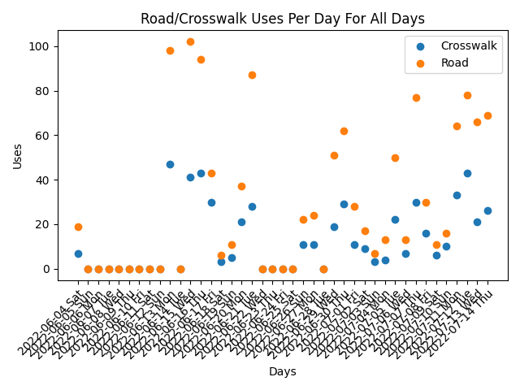

The following projections are the results of the crosswalk detections over the last 24 hours.
The following graphs represent the recent trends over a larger period of time.
|

Heatmap showing which hours have the highest frequency of crosswalk usages |

Line graph showing the overall trends of the amount of people using the |
This material is based upon work supported by the National Science Foundation under Grant No. OAC 1935984.